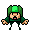

Le cœur de votre jeu sera créé à partir des éléments ajoutés à l' arborescence des ressources. C'est là que vous pouvez ajouter tout ce dont votre jeu a besoin pour fonctionner, y compris une salle de jeux, des sprites, des objets, des chemins et un certain nombre d'autres choses. Un jeu de base dans GameMaker Studio 2 nécessitera une salle d'exécution, et généralement au moins un objet et un sprite, bien que vous en utilisiez probablement beaucoup plus!  Vous pouvez ajouter une ressource à l'arborescence des ressources en cliquant avec le bouton droit de la souris
Vous pouvez ajouter une ressource à l'arborescence des ressources en cliquant avec le bouton droit de la souris  dessus et en sélectionnant l'option Créer dans le menu contextuel (pour plus de détails sur ce menu local, voir ci-dessous). C'est la même chose pour toutes les ressources disponibles, mais chacune a son propre éditeur unique qui s'ouvrira lorsque vous le ferez. Notez que tat en haut à gauche de l'arbre de ressources vous avez le bouton Réduire tout qui peut être utilisé pour fermer tous les dossiers de ressources ouverts.
dessus et en sélectionnant l'option Créer dans le menu contextuel (pour plus de détails sur ce menu local, voir ci-dessous). C'est la même chose pour toutes les ressources disponibles, mais chacune a son propre éditeur unique qui s'ouvrira lorsque vous le ferez. Notez que tat en haut à gauche de l'arbre de ressources vous avez le bouton Réduire tout qui peut être utilisé pour fermer tous les dossiers de ressources ouverts.
Vous pouvez voir un bref aperçu de chacune des ressources disponibles dans l'arborescence des ressources en cliquant sur l'un des boutons ci-dessous:
Les sprites sont généralement les représentations visuelles d'objets dans les jeux que vous créez. En tant que tel, une image-objet est une image dessinée à l'aide de l' GameMaker Studio 2 image de GameMaker Studio 2, ou réalisée avec un programme de dessin externe et importée dans GameMaker Studio 2. L'image utilisée ne doit pas non plus être une seule chose statique... elle peut aussi être une image "strip", c'est-à-dire: plusieurs images dans un seul fichier qui peuvent ensuite être utilisées pour faire une seule image animée. Par exemple, les 10 images suivantes forment un sprite pour un personnage qui agite les bras en parachutisme.
Et l'animation finie ressemblerait à ceci lorsqu'elle est placée dans un jeu:

Un sprite comme celui-ci est généralement un PNG fichier de format, mais GameMaker Studio 2 accepte également les sprites vectoriels SWF format, et les sprites Spine dans JSON (avec leur fichier atlas de texture).
Vous pouvez en savoir plus sur l'ajout d'images-objets dans la section de l' éditeur de sprites.
Les ensembles de tuiles sont tirés des ressources de l'image-objet, mais sont classés comme une ressource distincte puisque GameMaker Studio 2 traitera différemment lors de la création de votre jeu. Fondamentalement, un ensemble de tuiles est une image unique que GameMaker Studio 2 en sections distinctes en fonction des valeurs que vous donnez pour les différents paramètres. Vous pouvez ensuite les utiliser dans l'éditeur de pièce (ou de manière procédurale à l'aide du code) pour générer une carte de tuiles dans votre pièce. Ils sont parfaits pour la conception d'objets statiques dans votre pièce, comme le terrain, les murs, les décors, etc... car ils n'ont pas le même overhead que les objets.
Ci-dessus est un exemple d'image-objet qui serait utilisé comme un ensemble de tuiles pour créer des murs. Comme vous pouvez le voir, il peut être "divisé" en morceaux 64x64pixel, qui seraient ensuite placés dans l'éditeur de la salle.NOTE: Les carreaux sont toujours carrés, donc si vous avez besoin de quelque chose d'autre, vous devriez utiliser une instance avec une image-objet ou une couche d'actif dans l'éditeur de pièce.
Vous pouvez en savoir plus sur l'ajout de jeux de tuiles dans la section de l' éditeur de jeu de carreaux.
Le son est une partie importante de tout jeu, à la fois pour ajouter du dépot au gameplay et donner des retours sous la forme d'effets sonores, et pour ajouter de l'ambiance sous forme de musique. GameMaker Studio 2 accepte WAV, MP3 et OGG formats de fichiers.
En général, WAV Les fichiers sont utilisés pour tous les effets sonores courts car même si ce sont généralement des fichiers plus volumineux, ils seront joués instantanément car ils n'ont pas besoin de décodage pour jouer. MP3 et OGG Les fichiers doivent être utilisés pour la musique de fond ou pour tout effet diffusé sur une période plus longue ou dont la taille de fichier est assez grande. Ces fichiers sont beaucoup plus petits qu'un WAV fichier et mais ont un surcoût CPU associé à eux car ils doivent être décodés avant d'être joué.
Vous pouvez en savoir plus sur l'ajout de sons dans la section de l' éditeur de sons.
À un moment donné, lors de la création de vos jeux, vous pouvez avoir besoin d'une instance d'un de vos objets pour suivre un chemin à travers un niveau. Maintenant, cela peut être fait en créant simplement un tableau de positions dans la pièce et en faisant ensuite passer l'instance entre elles, mais cela peut être une corvée à mettre en place et est difficile à changer, tester et adapter pour différentes choses. C'est quand vous voudriez créer une ressource de chemin.
L'idée de base de la ressource de chemin est plutôt simple - vous définissez un chemin en le dessinant dans l'éditeur de chemin, puis vous pouvez placer une action (ou code) dans un événement d'un objet pour dire à l'objet de suivre ce chemin particulier dans le chemin salle de jeux. Vous pouvez définir la vitesse pour suivre le chemin et un certain nombre d'autres actions relatives à la position et l'orientation du chemin dans la pièce aussi.
Vous pouvez en savoir plus sur l'ajout de chemins à partir de la section sur l' éditeur de chemin.
Une ressource de script est une collection de codes que vous avez écrits pour créer votre propre fonction. Par exemple, disons que vous voulez qu'un ennemi crée un certain nombre d'instances lorsqu'il meurt, comme de l'or, une explosion et du sang, et qu'il joue un son. Maintenant, vous pouvez ajouter tout le code requis dans chaque objet qui le requiert, mais en général, vous feriez mieux de créer une seule ressource de script avec le code, puis de l'appeler. Cela signifie que vous devez seulement ajouter une ligne de code dans les objets pour appeler cette nouvelle fonction scriptée, et si vous souhaitez changer quelque chose, vous n'avez besoin de le changer qu'une fois dans le script et tous les objets exécuteront automatiquement le nouveau code, plutôt que d'avoir à parcourir tous les objets et à changer la même chose à plusieurs endroits.
Vous pouvez en savoir plus sur l'ajout de chemins à partir de la section sur l' éditeur de script.
Les shaders sont un outil très puissant qui peut être utilisé pour manipuler les graphiques que votre jeu affiche à l'écran, permettant des effets incroyablement rapides pouvant aller, par exemple, d'une teinte subtile à une image-objet, jusqu'à des effets de distorsion plein écran. Fondamentalement, il s'agit d'un programme en deux parties qui s'exécute directement sur la carte graphique elle-même, ce qui rend très rapide puisque le GPU fait tout le travail et libère des cycles CPU pour votre code de jeu. Le shader complet comprend un programme de vertex shader et un programme de fragment shader (également connu sous le nom de pixel shader). Ces deux petits programmes fonctionnent ensemble afin de manipuler ce que la carte graphique rend à l'écran. Cela vous permet ensuite de manipuler en temps réel la position, la couleur et les valeurs alpha qui sont réellement rendues dans le tampon d'affichage.
GameMaker Studio 2 prend en charge les langues de shader suivantes:
Shader Language Plate-forme cible GLSL ES Toutes les plates-formes cibles GLSL Mac et Ubuntu (Linux) HLSL11 Windows, UWP, XboxOne PSSL Playstation 4
Vous pouvez en savoir plus sur l'ajout de shaders dans la section de l' éditeur Shader.
Lorsque vous voulez dessiner du texte dans votre jeu, ce texte sera dessiné dans une police standard Arial 12 points par défaut, mais pour faire des textes plus intéressants ou uniques, vous voudrez probablement utiliser des polices différentes. C'est ici que l'éditeur de polices est utilisé. Ici vous pouvez sélectionner une police que vous avez sur votre ordinateur et l'importer dans GameMaker Studio 2 pour l'utiliser dans votre jeu, en définissant divers attributs comme la taille et le poids ou le style. Une fois importé et ajouté en tant que ressource, vous pouvez ensuite le définir pour le dessin en utilisant le code ou les actions appropriés.REMARQUE: Si vous ajoutez des polices à votre jeu, assurez-vous que vous disposez de la licence nécessaire pour le redistribuer, sauf s'il s'agit d'un domaine public ou libre de droits.
Vous pouvez en savoir plus sur l'ajout de polices dans la section de l' éditeur de polices.
Dans la plupart des jeux, vous voulez que certaines choses se produisent à certains moments dans le temps. Maintenant, vous pouvez essayer d'y parvenir en utilisant les événements d'alarme dans une instance, mais lorsque les choses deviennent trop compliquées cela ne fonctionnera plus, d'autant plus que vous êtes limité à seulement douze alarmes. C'est pourquoi nous avons la ressource de calendrier. Dans un scénario, vous spécifiez quelles actions doivent se produire à un moment spécifique du jeu, et vous pouvez utiliser toutes les actions disponibles pour un objet dans ses différents événements ainsi que le code. Une fois que vous avez créé une ligne de temps, vous pouvez l'assigner à un objet, et l'instance de cet objet exécutera ensuite les actions et le code aux moments indiqués lorsqu'il sera placé ou créé dans une pièce.
Vous pouvez en savoir plus sur l'ajout de chronologies dans la section de l' éditeur de montage.
Les objets sont une ressource spéciale que nous utilisons pour contrôler les aspects d'un jeu et pour faire des choses spécifiques. La plupart du temps ils ont un sprite associé à eux pour que vous les voyiez dans la salle de jeu, mais parfois ils sont utilisés comme un contrôleur "en coulisse" pour faire des choses liées à l'utilisateur ou pour le timing, etc... On peut leur donner des comportements et ils peuvent réagir à certains événements ainsi qu'à d'autres, et la plupart des choses que vous voyez dans un jeu sont basées sur des objets et leurs interactions. Notez que nous disons "basé sur" parce que vous ne placez pas les objets directement dans la salle de jeu, mais que vous placez des instances de ces objets, qui sont essentiellement des copies (ou des clones si vous préférez) de la ressource objet. C'est une chose très importante à retenir car les instances et les objets ne sont pas la même chose et chacun a son propre ensemble de fonctions qui peuvent les affecter.
Tous les objets ont un ensemble de propriétés que vous pouvez spécifier dans l'éditeur d'objet, comme le sprite, qu'il utilise la physique ou non, ou qu'il s'agisse d'un objet "enfant" d'un autre. Ils ont également une série de variables intégrées qui peuvent ensuite être utilisées dans les actions, les scripts et le code. Ces variables intégrées sont utilisées pour définir la position de l'instance lorsqu'elle est placée dans la salle de jeu, la vitesse d'animation, la direction du mouvement et une foule d'autres choses. Pour contrôler le comportement de l'objet au fil du temps, chaque image est divisée en une série d' événements. Vous pouvez ainsi ajouter du code ou des actions à un événement spécifique. Elle ne s'exécute que lorsque l'événement est déclenché. le bouton de la souris appuie sur ou collisions avec d'autres instances.
Les objets sont dans un sens très réel les blocs de construction de votre jeu, et ensemble avec les pièces formeront le noyau de tout projet que vous créez.
Vous pouvez en savoir plus sur l'ajout d'objets dans la section de l' éditeur d'objets.
Tous les jeux que vous créez dans GameMaker Studio 2 ont besoin d'au moins une pièce (mais peuvent en avoir beaucoup, beaucoup plus), et une pièce est essentiellement un espace où vous placez des instances des objets qui composent votre jeu et où l'action de le jeu aura lieu. Cependant, Room Editor est l'une des ressources les plus puissantes à votre disposition, car elle vous permet non seulement d'ajouter des instances d'objets, mais aussi de configurer la "vue" dans la salle de jeu, ajoutez les arrière-plans et les mosaïques dessinés créez le monde du jeu, créez des effets spéciaux supplémentaires indépendants du système objet / instance, et exécutez le code indépendamment d'un objet. Les pièces peuvent également être configurées pour hériter des propriétés d'autres pièces, ce qui signifie que vous pouvez créer une seule pièce avec un chargement de mosaïques, par exemple, puis créer une autre pièce qui hérite de ces mosaïques, afin de ne pas avoir à recréer eux encore.
Vous pouvez en savoir plus sur l'ajout de salles dans la section de l' éditeur de salle.
Les notes sont simplement des fenêtres d'éditeur de code qui vous permettent d'écrire n'importe quoi. Ils sont conçus comme un endroit pour conserver des extraits de code, des informations de jeu, des listes de choses à faire, des communications d'équipe, etc...
Vous pouvez en savoir plus sur l'ajout de notes dans la section de l' éditeur Notes.
Les fichiers inclus sont, comme son nom l'indique, tout fichier que vous souhaitez inclure dans le jeu lorsque vous exportez le jeu sur la plate-forme cible. Ces fichiers peuvent être n'importe quoi, des documents texte aux images, en passant par les fichiers compressés et peuvent être consultés à l'aide des diverses fonctions de fichier, en suivant les règles définies par le système de fichiers.
Vous pouvez en savoir plus sur l'ajout de fichiers à partir de la section sur les fichiers inclus.
Les extensions sont des fichiers et du code supplémentaires que vous pouvez ajouter pour étendre les fonctionnalités de GameMaker Studio 2 et ajouter des éléments à votre jeu depuis Marketplace. Le format d'une extension variera en fonction de la plate-forme cible finale, bien qu'en général ils soient écrits en C ++, C # ou JavaScript, qui est ensuite analysé en utilisant des fonctions spécifiques dans GML.
Vous pouvez en savoir plus sur l'ajout d'extensions dans la section de l' éditeur d'extension.
La ressource Options de jeu comprend une série d'options différentes pour le projet dans son ensemble et pour chaque plate-forme cible vers laquelle vous souhaitez exporter. Quelles que soient les plates-formes disponibles, vous disposez toujours d'une ressource d'option de jeu principal pour configurer des éléments spécifiques au projet, tels que la vitesse du jeu. Pour plus d'informations, consultez la section sur les options de jeu.
Ici, vous pouvez choisir ou créer une configuration que vous souhaitez utiliser pour l'arbre des ressources, et ensuite l'ensemble de votre projet. Au démarrage, les configurations peuvent ne pas être si importantes, mais à mesure que la complexité et le nombre de plates-formes cibles projetées augmentent, vous constaterez qu'elles sont un outil précieux pour organiser et exporter vos jeux correctement. Essentiellement, ils sauvegardent la configuration actuelle des différentes options de jeu et les options d'exportation pour l'arborescence des ressources, ce qui signifie que vous pouvez avoir une configuration spécifique pour Android, une autre pour Windows, etc. Pour plus d'informations voir la page Configurations.
Si vous voulez un guide plus détaillé sur la façon d'utiliser les différents éditeurs listés ici, alors vous devriez consulter la section du manuel qui les explique plus en détail ici:
Menu RMB
Lorsque vous travaillez avec l'arborescence des ressources, vous pouvez utiliser le bouton droit de la souris  sur n'importe quelle ressource ou dossier pour ouvrir un menu d'options:
sur n'importe quelle ressource ou dossier pour ouvrir un menu d'options:  Les options disponibles sont:
Les options disponibles sont:
- Créer - Crée une nouvelle ressource du type sur lequel vous avez cliqué pour ouvrir le menu.
- Ouvrir les propriétés - Ouvrez l'éditeur de propriétés de la ressource cliquée (notez que vous pouvez double-cliquer
 aussi).
aussi). - Ajouter un existant - GameMaker Studio 2 ajouter une ressource existante à partir d'un dossier de projet GameMaker Studio 2 différent.
- Ajouter des éléments existants à partir de ma bibliothèque: ajoutez des ressources à l'arborescence à partir d'un actif de votre bibliothèque Marketplace.
- Importer une extension - Importe une extension à votre projet (disponible uniquement dans la ressource Extensions ).
- Ajouter un groupe: ajoute un nouveau dossier de groupe de ressources à l'arborescence à l'emplacement sur lequel vous avez cliqué.
- Renommer - Renommez la ressource ou le dossier du groupe.
- Supprimer - Supprimer la ressource du projet (cela la supprimera complètement, sauf si vous êtes dans une vue de projet autre que celle par défaut - voir ci-dessous).
- Dupliquer: crée un doublon de la ressource sur laquelle vous avez cliqué.
- Ouvrir dans l'Explorateur - Cela ouvrira l'explorateur de fichiers sur l'emplacement du fichier qui a été stocké pour la ressource dans votre dossier de projet.
Notez que toutes les options ne seront pas disponibles pour toutes les ressources et que le type de ressource ou le dossier dépendra de ceux que vous pouvez utiliser.
Vues du projet
Une section en haut de l'arborescence des ressources intitulée Views vous permet de configurer un ou plusieurs arborescences de ressources personnalisées pour afficher uniquement les parties du projet sur lesquelles vous souhaitez travailler à la fois ou pour organiser votre projet dans un manière différente, par exemple par niveau. La vue par défaut est la disposition standard de l'arborescence des ressources décrite ci-dessus, mais vous avez deux options pour créer de nouvelles vues en fonction de ce dont vous avez besoin:
| Cela créera une nouvelle vue de l'arborescence de ressources clonée à partir de la vue précédemment sélectionnée. Donc si vous cliquez sur ceci dans la vue par défaut, par exemple, une copie exacte sera faite pour que vous puissiez ensuite éditer. | |
| Cela créera une nouvelle vue de l'arborescence des ressources sans aucune ressource ajoutée (c'est-à-dire une vue vide). Vous pouvez ensuite utiliser le menu du bouton droit de la souris (voir ci-dessous) pour ajouter des ressources et les organiser comme vous le souhaitez. |
Lorsque vous utilisez une vue de projet autre que la vue par défaut, vous pouvez faire glisser et déposer des ressources où vous le souhaitez et renommer les dossiers comme vous le souhaitez. De cette façon, vous pouvez configurer une vue de l'arbre des ressources qui correspond à vos besoins. Par exemple, disons que vous avez un jeu de plate-forme avec plusieurs mondes - vous pouvez créer une "Vue Mondiale" de l'arborescence des ressources avec des dossiers appelés "World 1", "World 2", etc... puis faites glisser les sprites, tilesets, instances et salles associées à chaque monde dans les dossiers requis. Ou dites que vous travaillez dans une équipe et que vous voulez avoir une "vue d'artiste", ainsi vous créez une arborescence de ressource coupée qui montre seulement les sprites, les instances et les salles.
Vous pouvez également supprimer des vues en utilisant le bouton  (ce n'est pas disponible pour la vue par défaut) et les vues peuvent être renommées en cliquant simplement sur le nom et en entrant le nouveau nom dont vous avez besoin. Notez que le bouton droit de la souris
(ce n'est pas disponible pour la vue par défaut) et les vues peuvent être renommées en cliquant simplement sur le nom et en entrant le nouveau nom dont vous avez besoin. Notez que le bouton droit de la souris  menu sur les ressources qui ne sont pas dans la vue par défaut est légèrement différente et dispose des options suivantes: La plupart des options sont évidentes mais il faut préciser que Create vous permettra de créer une nouvelle ressource n'importe où dans la vue personnalisée du projet (elle sera ajoutée dans le bon dossier de ressources dans la vue par défaut de l'arborescence), et Ajouter à partir de la vue par défaut vous permettra de transférer une ressource de l'arborescence de ressources par défaut dans la vue personnalisée. Cela ne sera pas nécessaire si vous clonez la vue par défaut, puisque toutes les ressources actuelles seront dedans pour commencer, mais si vous utilisez une vue vide ou utilisez l'option Supprimer le bouton droit de la souris pour supprimer l'élément de la nouvelle vue, vous devra rajouter à nouveau plus tard si nécessaire. Notez que l'utilisation de Delete ne supprime pas la ressource du projet et qu'elle sera toujours visible dans l'arborescence de ressources par défaut, qui est la vue que vous devriez utiliser si vous souhaitez supprimer complètement la ressource et pas seulement la vue.
menu sur les ressources qui ne sont pas dans la vue par défaut est légèrement différente et dispose des options suivantes: La plupart des options sont évidentes mais il faut préciser que Create vous permettra de créer une nouvelle ressource n'importe où dans la vue personnalisée du projet (elle sera ajoutée dans le bon dossier de ressources dans la vue par défaut de l'arborescence), et Ajouter à partir de la vue par défaut vous permettra de transférer une ressource de l'arborescence de ressources par défaut dans la vue personnalisée. Cela ne sera pas nécessaire si vous clonez la vue par défaut, puisque toutes les ressources actuelles seront dedans pour commencer, mais si vous utilisez une vue vide ou utilisez l'option Supprimer le bouton droit de la souris pour supprimer l'élément de la nouvelle vue, vous devra rajouter à nouveau plus tard si nécessaire. Notez que l'utilisation de Delete ne supprime pas la ressource du projet et qu'elle sera toujours visible dans l'arborescence de ressources par défaut, qui est la vue que vous devriez utiliser si vous souhaitez supprimer complètement la ressource et pas seulement la vue.
Vous devriez maintenant avoir une idée des ressources de base qui sont à votre disposition pour créer vos jeux. Nous allons donc passer au flux de travail général lorsque vous utilisez GameMaker Studio 2 et commencer un nouveau projet.